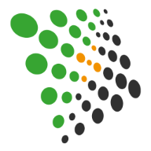

Contexte
Mesurer la sobriété pour prioriser les actions les plus impactantes
Contexte
Le Chapitre Digital Front de Crédit Agricole Technologies & Services développe des applications pour les collaborateurs et pour 8 millions de clients.
Les équipes étaient confrontées à plusieurs enjeux concrets :
L'objectif était donc de mieux mesurer le comportement des applications pour prioriser les actions les plus impactantes.
- des utilisateurs insatisfaits car certaines applications étaient trop lentes ;
- des volumes de données trop élevés pour les réseaux des agences bancaires ;
- une responsabilité environnementale à intégrer dans la démarche produit.

Résultats
Un label interne Smart'Use pour évaluer et faire progresser les produits
Résultats
- Les produits web et mobiles sont évalués et labellisés grâce à un label interne de sobriété.
- Les progrès sont encouragés par l'émulation entre les équipes.
- Les équipes disposent de résultats concrets pour identifier les leviers d'amélioration prioritaires.
Clés du succès
Ce qui a fait la différence
Des critères de labellisation coconstruits
Les critères du label interne de sobriété « Smart'Use » ont été coconstruits puis déployés auprès des Tribus.
Un fonctionnement en services managés
Des audits sont réalisés à la demande, dans une logique de services managés adaptée aux besoins des équipes.
Un accès direct aux résultats
Les squads accèdent à Greenspector Studio pour consulter leurs résultats, suivre les indicateurs et identifier les actions à mener.
Une dynamique d'amélioration continue
La démarche stimule l'émulation entre les équipes et encourage la progression continue des produits web et mobiles.
Témoignage
La parole à Julien Azria
« La solution remonte des résultats très concrets sur le comportement de nos applications. Cela nous permet de nous concentrer sur les actions les plus impactantes. Travailler sur la sobriété permet très clairement d'avoir une application plus performante. »
Visuels
Le projet en images

À vous de jouer
Vous souhaitez mettre en place un label interne de sobriété numérique ?
À vous de jouer